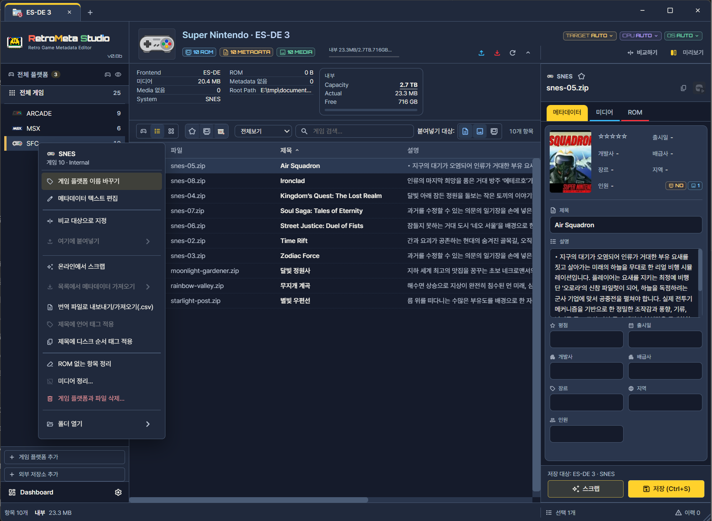

파일 관리와 저장공간
게임목록의 최대 저장용량을 설정해 두고, 편집하는 동안 남은 용량을 확인할 수 있습니다. 용량이 제한된 SD카드 같은 매체로 옮길 때, 어디까지 담을 수 있는지 미리 가늠하며 게임을 고를 수 있어 유용합니다. 아울러 실제 파일 상태를 보면서 복사·이동·삭제·정리를 실행합니다. 모든 파일 작업은 검토 화면에서 대상과 범위를 확인한 뒤 적용합니다.
어떤 때 쓰나
- SD카드처럼 용량이 한정된 매체에 맞춰 일부 게임만 골라 옮길 때
- ROM은 없고 메타데이터만 남은 항목, 더 이상 쓰지 않는 미디어를 정리할 때
- 게임목록이 차지하는 용량을 파악하고 싶을 때
용량 보기
현재 대상의 상단 용량 표시에 사용량 / 전체 용량 / 남은 공간 이 나옵니다. 편집이나 복사 작업을 하면 이 값이 함께 바뀌므로, 정해 둔 용량을 넘지 않게 작업을 진행할 수 있습니다. 전체 집계와 목표 용량은 Dashboard에서 봅니다.
복사·이동·삭제
- 작업할 게임이나 시스템을 선택합니다.
- 우클릭으로 복사·이동·삭제 중 하나를 엽니다.
- 검토 화면에서 대상, 포함 자료(메타데이터·미디어·ROM), 저장 위치, 예상 용량을 확인합니다.
- 같은 파일이 이미 있으면 충돌 처리 방식을 고릅니다.
- 적용한 뒤 완료와 실패 항목을 확인합니다.


- 1작업할 시스템
- 2미디어 정리
정리 창에서 현재 시스템, 미디어 종류, 대상 파일과 복구 가능 범위를 읽습니다. 연결이 끊긴 저장소를 빈 자료로 판단하지 않도록 먼저 연결 상태를 확인합니다.
작은 매체로 옮길 때는 검토 화면의 예상 용량을 남은 공간과 비교해, 넘치는 경우 대상을 줄이거나 미디어를 제외하고 다시 검토합니다.
그림의 순서와 검토 항목
| 번호 | 단계 | 살펴볼 내용 |
|---|---|---|
| 1 | 시스템 선택 | 작업할 시스템에서 우클릭 메뉴를 엽니다. |
| 2 | 작업 종류 선택 | 미디어 정리 등 실행할 작업을 고릅니다. ROM 없는 항목 정리는 별도 작업입니다. |
| 3 | 검토·적용 | 대상 파일·종류·삭제 범위·복구 가능 여부를 읽고 적용합니다. |
정리 기능
| 기능 | 찾는 대상 | 유의점 |
|---|---|---|
| ROM 없는 항목 정리 | 게임목록에는 있으나 ROM 파일이 없는 항목 | 기기나 외부 드라이브가 분리된 상태에서는 ROM이 없는 것으로 보일 수 있으므로 쓰지 않아야 합니다. 먼저 연결하고 다시 스캔합니다. 정보·미디어 전용 컬렉션에서는 대상이 의미 없습니다. |
| 미디어 정리 | 연결 상태와 조건에 맞지 않는 미디어 | 검토 목록의 파일 경로와 개수를 확인한 뒤 적용합니다. |
정리를 마친 뒤에는 게임목록을 다시 읽어 결과를 확인합니다.
작업이 일부 실패했을 때
전체가 성공했다고 단정하지 말고 항목별 결과를 확인합니다. 복구와 실행 취소가 가능한지는 해당 작업에 표시되는 상태와 버튼을 기준으로 합니다. 자세한 내용은 작업 이력과 복구에 있습니다.
문제 해결
남은 공간이 충분한데 전송이 실패했습니다.
대상 폴더의 쓰기 권한, 기기 연결, 파일 경로의 길이와 사용할 수 없는 문자를 확인하고 결과의 오류 내용을 봅니다. 중단된 작업이 남아 있으면 먼저 복구 상태를 처리합니다. 대상 없음·쓰기 권한·장치 연결·변경된 원본·공간 부족은 서로 다른 오류 원인입니다. 결과에 표시된 실제 대상 경로와 원인을 기준으로 해결합니다.
SD카드로 옮겼더니 예상보다 용량이 큽니다.
ROM과 함께 미디어(동영상, 매뉴얼 등)가 포함되었는지 검토 화면의 포함 자료를 확인합니다. 용량이 큰 미디어를 제외하면 크기를 줄일 수 있습니다.
ROM 없는 항목 정리 대상이 너무 많이 나옵니다.
외부 드라이브나 기기가 연결되지 않은 상태일 수 있습니다. 연결을 확인하고 다시 스캔한 뒤에 정리합니다.